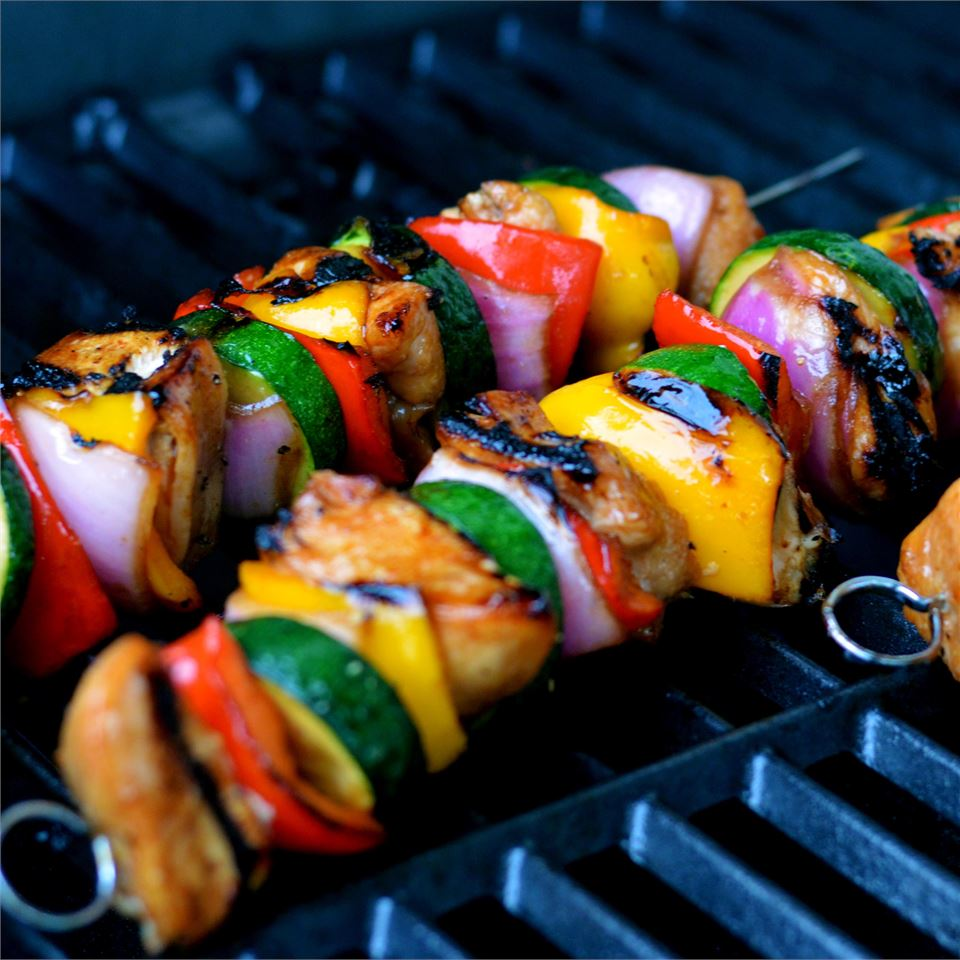

Yummy Honey Chicken Kabobs

Description
Chicken kabobs marinated in a sweet and sour sauce are a fun alternative
to
usual barbecue fare. The honey-soy mixture does double duty as a
marinade and a
basting sauce, adding delicious flavor to every bite of juicy chicken.
Use fresh
mushrooms, cherry tomatoes, or other veggies and marinate overnight if
desired.
Don't have a grill? These can be cooked under your broiler.
Ingredients
Marinade:
- ⅓ cup honey
- ⅓ cup soy sauce
- ¼ cup vegetable oil
- ¼ teaspoon ground black pepper
Kabobs:
- 8 skinless, boneless chicken breast halves - cut into 1 inch cubes
- 5 small onion, cut into 2-inch pieces
- 2 medium red bell peppers, cut into 2-inch pieces
- 2 cloves garlic
- 12 bamboo skewers, or as needed, soaked in water for 30 minutes
Steps
- Whisk together honey, soy sauce, oil, and black pepper for marinade
in a large
glass bowl. Remove 1/4 cup of the marinade to a small jar; seal and
set aside to
use while cooking.
- Add chicken, onions, bell peppers, and garlic to the marinade in the
large bowl.
Cover and marinate in the refrigerator for 2 hours or overnight.
- When ready to cook, preheat an outdoor grill for high heat and
lightly oil the
grate.
- Drain marinade from the chicken and vegetables, and discard
marinade. Thread
chicken and vegetables alternately onto skewers.
- Place kabobs on the preheated grill. Cook, turning frequently and
brushing with
the reserved marinade, until the chicken is no longer pink in the
middle and the
juices run clear, 12 to 15 minutes total.